Fun with Flow Models
A flow model learns a velocity field. Start from Gaussian noise at time 0, follow the field, and you arrive at a clean image at time 1. In Part A I drive a large pretrained text-to-image flow model (PixNerd-XXL) with my own samplers: denoising, generating, editing real photos and drawings, and building optical illusions by mixing two velocity fields. In Part B I build a small UNet and train flow matching from scratch on MNIST, first as a one-step denoiser, then conditioned on time, then on time and digit class.
Part A
1.1 Noisy training inputs ·
1.2 Gaussian blur ·
1.3 One-step denoising ·
1.4 Velocity ·
1.5 Euler sampling ·
1.6 Generation
2.1 Classifier-free guidance ·
3.1 Image-to-image editing ·
3.2 Text-guided editing ·
3.3 Visual anagrams ·
3.4 Hybrid images
Part B
1.1 UNet ·
1.2 Single-step denoiser ·
1.2.3 Denoising pure noise
2.1–2.3 Time-conditioned flow matching ·
2.4–2.6 Class-conditioned flow matching ·
Removing the scheduler
Throughout, I use the convention from the assignment: time 0 is noise and time 1 is a clean
image, xt = (1 − t)ε + t x1 with
ε ~ N(0, I), and the network predicts the velocity
dxt/dt = x1 − ε.
Part A: Exploring the power of flow models
The model is PixNerd-XXL-P16-T2I, a pixel-space flow transformer that makes 512×512
images. Text prompts are turned into embeddings by a Qwen3 text encoder. Everything here is
sampling; no training happens in Part A. Unless stated otherwise, the Euler step size is
h = 0.02, so going from noise to image takes 50 steps.
1.1 Constructing noisy training inputs
A training input is a point on the straight line between a noise image and a clean image.
It is not just "image plus noise": as t drops, the image is also scaled down by
t while the noise is scaled up by 1 − t. I sample one noise
tensor and reuse it for all three times, so the only thing that changes between the panels is
where on the line we sit.
def interpolate(image, noise, t):
"""x_t = (1 - t) * eps + t * x_1. t = 0 is pure noise, t = 1 is the clean image."""
return (1 - t) * noise + t * imageBoth endpoints are checked exactly in the notebook: interpolate(image, eps, 0)
is the noise and interpolate(image, eps, 1) is the image.
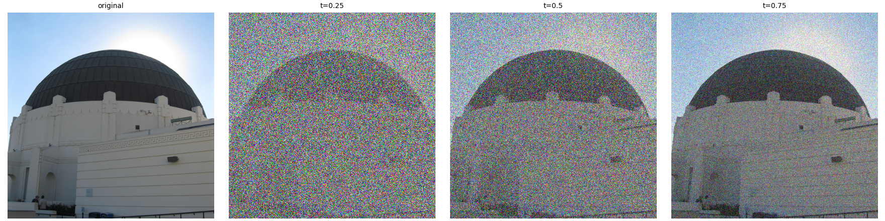
1.2 Classical denoising
The baseline uses no learned model. Dividing by t restores the image's
amplitude, xt/t = x1 + ((1 − t)/t)ε, and a
Gaussian blur then averages away some of the independent, zero-mean noise. I tried
σ = 1, 2, 4, 8 and 16 and kept the one with the lowest mean squared error to the clean
image; the chosen σ is printed above each result.
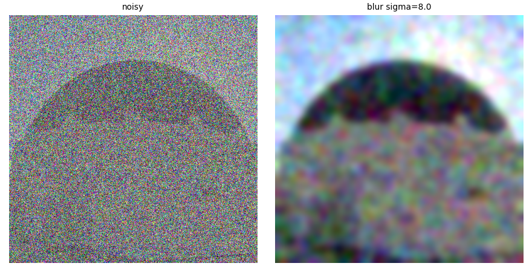
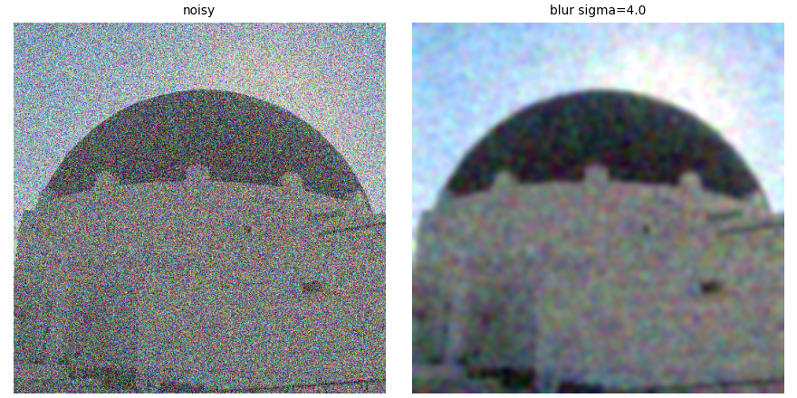
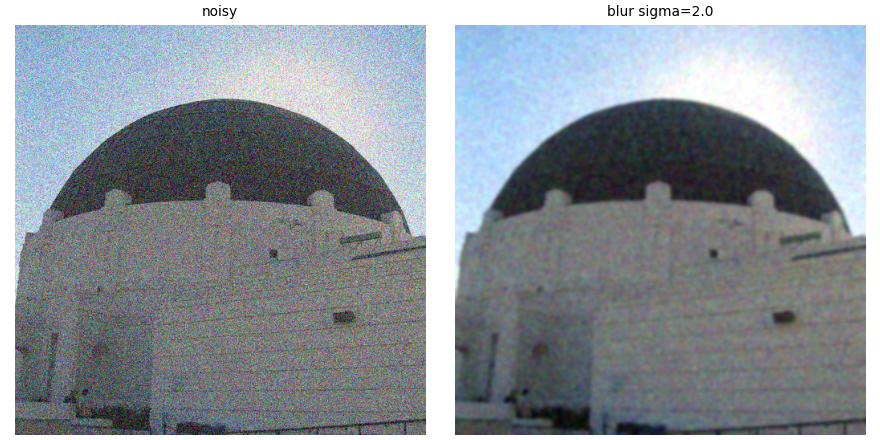
After dividing by t, the noise standard deviation is (1 − t)/t: 3 at t = 0.25, 1 at t = 0.5 and 1/3 at t = 0.75. A blur strong enough to beat noise that large also wipes out everything except the coarse layout, so blur can only trade noise for detail. It never puts back detail that the noise has hidden.
1.3 One-step denoising
The flow model predicts a velocity, the direction from noise to image. If the path really
were straight, one prediction would be enough to jump from xt to the
end: x̂1 = xt + (1 − t)vθ(xt, t, c),
with c the embedding of "a high quality photo".
def one_step_denoise(x, t, condition, predict_velocity):
return x + (1 - t) * predict_velocity(x, t, condition)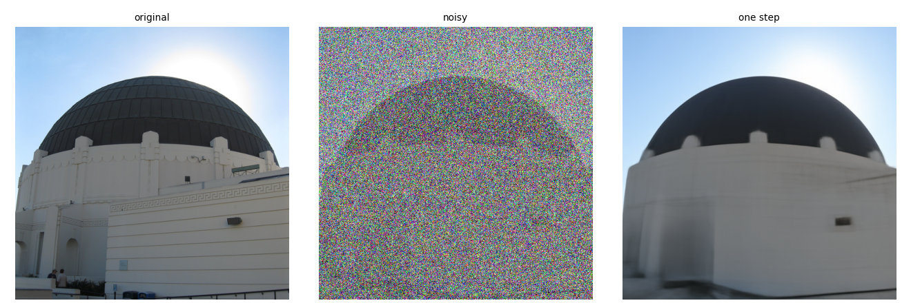
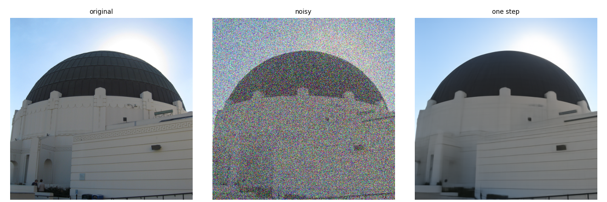
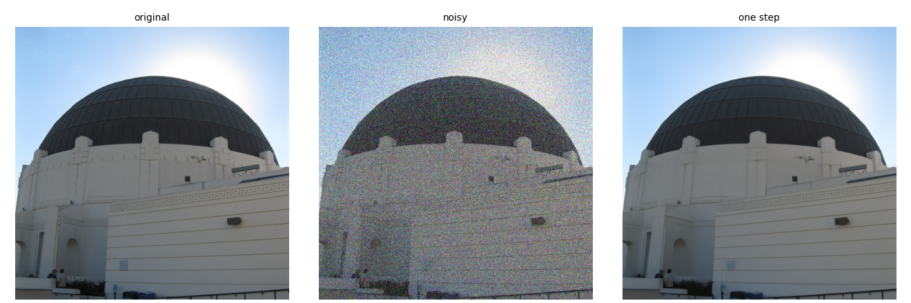
The one-step estimate is far better than blur, especially at t = 0.25, because the model knows what natural images look like. It is also blurry at high noise. A single velocity prediction is the model's best guess of the average clean image consistent with the noisy input, and an average of many possible images is soft. As t rises, fewer clean images are consistent with the input and the estimate sharpens.
1.4 Visualizing velocity
Because I know both the clean image and the exact noise, I also know the update one-step
denoising should add: (1 − t)vgt = (1 − t)(x1 − ε) = x1 − xt.
I compare it with the model's predicted update (1 − t)v̂t,
and the error map is the RMS difference across RGB at each pixel, computed on the raw values
before any display scaling.
@torch.inference_mode()
def velocity_diagnostics(x_t, t, clean_image, epsilon, condition, predict_velocity):
v_hat = predict_velocity(x_t, t, condition)
v_gt = clean_image - epsilon # straight-path velocity x_1 - eps
predicted_update = (1 - t) * v_hat
ground_truth_update = (1 - t) * v_gt # equals clean_image - x_t
error_map = ((predicted_update - ground_truth_update) ** 2).mean(dim=1).sqrt()
return predicted_update, ground_truth_update, error_map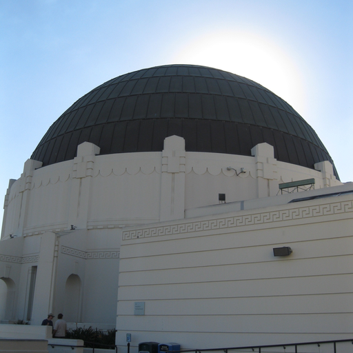
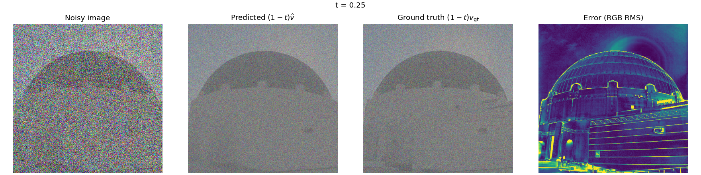
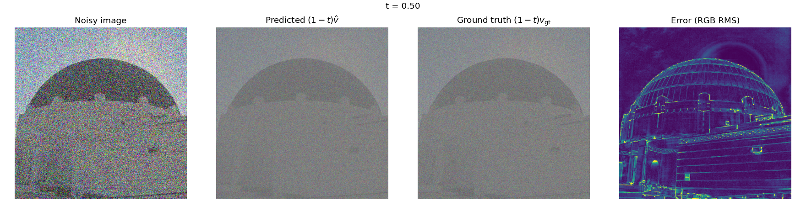
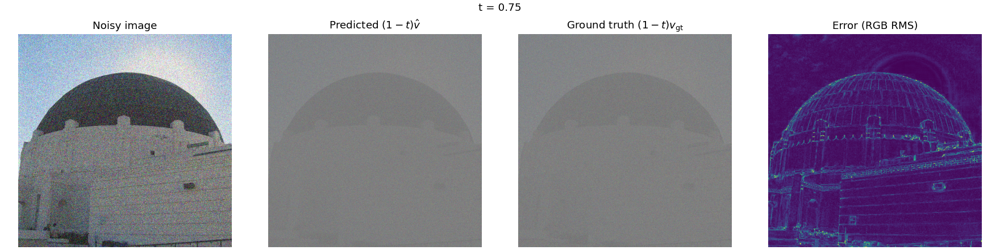
Both updates are dominated by the noise they have to remove, so at a glance they look
alike. Their difference is easier to read once written out: (1 − t)(v̂t − vgt) = x̂1 − x1,
so the error map is exactly the per-pixel error of the one-step estimate from 1.3. It is small
in flat regions, where the clean value is easy to infer from the surroundings, and largest on
edges and fine texture, where several clean images fit the noisy input equally well and the
model predicts something in between. It shrinks as t grows, because less of the image is
hidden by noise.
1.5 Iterative denoising with Euler sampling
Each training pair moves in a straight line, but the learned velocity field is an average over many pairs, so its trajectories curve. Euler integration follows the curve: take a small step, then ask the model for a new velocity at the new point.
@torch.inference_mode()
def euler_sample(x_start, t_start, step_size, velocity):
t_start = float(t_start)
# tolerance stops 0.5/0.02 = 25.000000000000004 from adding a spurious extra step
n_steps = max(1, math.ceil((1.0 - t_start) / step_size - 1e-6))
x = x_start.float()
states = [(t_start, x)]
for k in range(n_steps):
t = t_start + k * step_size # recomputed, not accumulated
t_next = 1.0 if k == n_steps - 1 else t_start + (k + 1) * step_size
h = t_next - t # last step shortened to land on 1
x = x + h * velocity(x, t) # fresh velocity at every step
if (k + 1) % 5 == 0 or k == n_steps - 1:
states.append((t_next, x))
return x, statesTimes are computed from the step index instead of being added up, so floating-point error cannot pile up, and the last step is shortened so the sampler always ends at exactly t = 1. The notebook checks this with a constant velocity field of 1: starting at 0, 0.5 and 0.93 it takes 50, 25 and 4 steps (the last one only 0.01 long) and ends at exactly 1 − tstart.
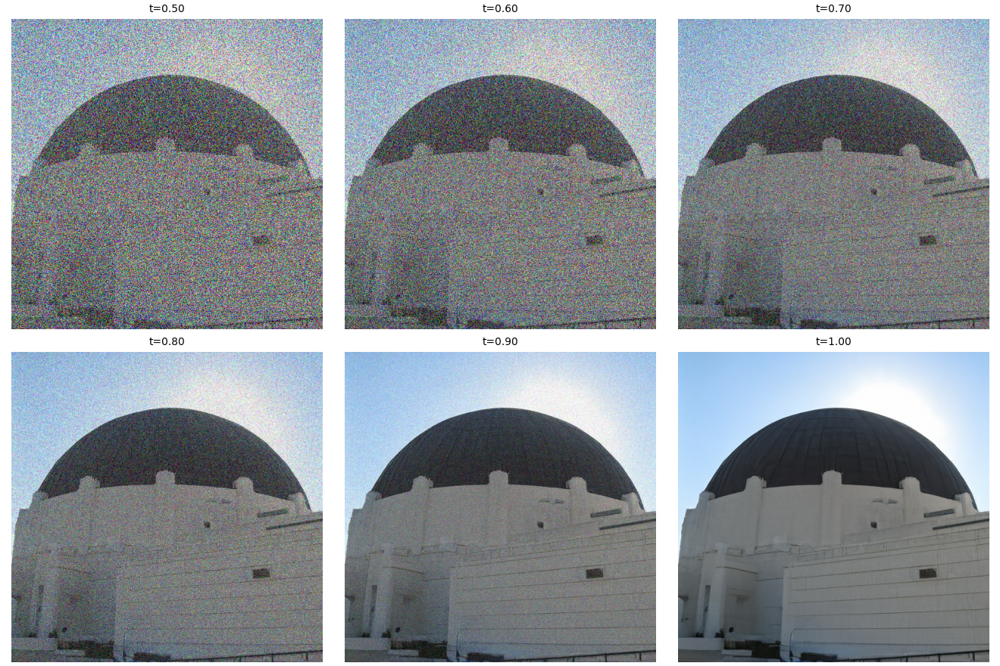
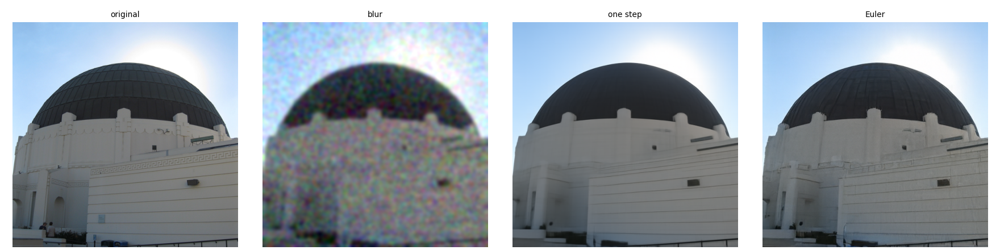
Euler sampling gives the sharpest result of the three. Instead of predicting the average of all plausible clean images in one jump, it commits to one of them a little at a time, so fine texture comes back. That texture is invented, not recovered: details that the noise destroyed are filled in with plausible ones, which is why the result can be sharp and still differ from the original in small places. The numbers show this: the mean squared error to my original is 0.0123 for blur, 0.0021 for one-step and 0.0025 for Euler. Euler is slightly worse than one-step by this measure even though it looks much better (the dome's panels and the wall edges come back), because a blurry average is penalized less by squared error than sharp details in slightly wrong places.
1.6 Generating images from noise
Setting t_start = 0 and starting from pure noise turns the denoiser into a
generator: 50 Euler steps with the prompt "a high quality photo", seeds 180 to 184.

Without guidance, every one of the five samples is a portrait: a head-and-shoulders shot of a person against a plain studio-like background. The generic prompt clearly pulls the model toward the most common kind of "high quality photo" in its training data, which is portrait photography. The quality is uneven, though. Seeds 182 and 184 are believable, but seed 180 has a face that melts into the hair and seed 183 has a distorted, smeared face. The model knows roughly what to make but has not committed to a clean version of it.
2.1 Classifier-free guidance
Classifier-free guidance evaluates the model twice at the same x and
t, once with the prompt and once with the empty prompt "", and pushes further in
the direction the prompt adds: vcfg = vc + w(vc − vu).
With w = 0 this is ordinary conditional sampling, which the notebook checks
exactly. I use w = 7.
def cfg_velocity(x, t, condition, w, predict_velocity, null_condition=''):
v_c = predict_velocity(x, t, condition)
if w == 0:
return v_c # ordinary conditional prediction
v_u = predict_velocity(x, t, null_condition)
return v_c + w * (v_c - v_u)
The difference vc − vu is the part of the velocity
that comes from the prompt. Multiplying it by 7 pushes every sample toward images that match
"a high quality photo" strongly, at the cost of diversity. All five guided samples are still portraits, but every one is now a clean, sharp, well-lit
studio headshot with a coherent face, including seeds 180 and 183, which were broken without
guidance. The cost is diversity: the unguided samples varied in framing, lighting, color and how
much of the body was shown, while the guided ones all look like the same kind of passport-style
photo: centered face, simple background, similar expression. The overall layout of each seed is
kept, though. Seed 182, for example, keeps the hand raised to the face in both versions, because
the initial noise fixes the coarse structure before guidance shapes the details.
3.1 Image-to-image editing
This is SDEdit with a flow model: noise a real image to some starting time, then run the
guided sampler from there to t = 1. The noise destroys the fine detail and the model has to
put detail back, so it pulls the image onto the manifold of natural images while keeping
whatever survived the noise. A small starting time means lots of noise and a big edit; a large
one keeps the result close to the input. All edits use "a high quality photo",
w = 7, h = 0.02, and the same noise.
def edit(image, noise, t_start, condition, predict_velocity, w=7, step_size=0.02):
x = interpolate(image, noise, t_start)
v = lambda x, t: cfg_velocity(x, t, condition, w, predict_velocity, null_condition)
return euler_sample(x, t_start, step_size, v)[0]
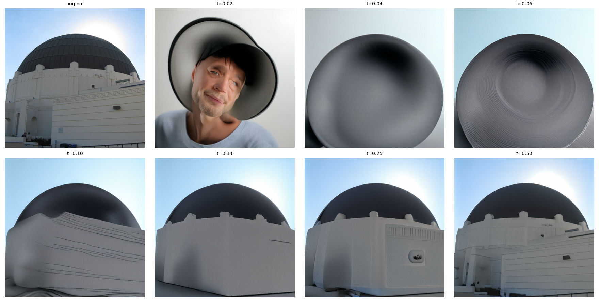
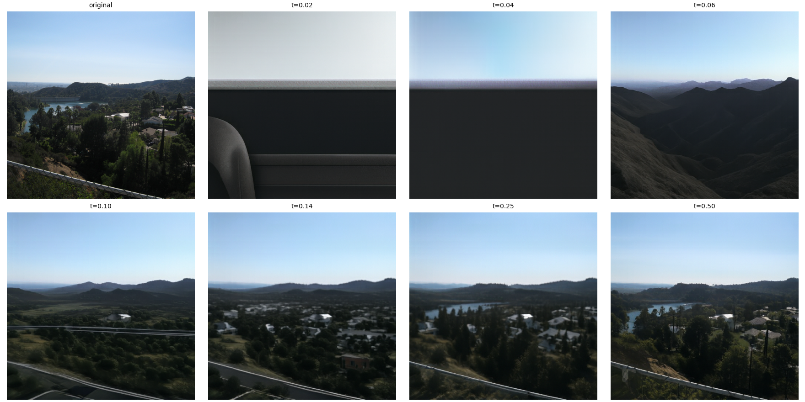
Reading each row from left to right, the edits move steadily closer to the input. At t = 0.02 little more than the overall colors and the roughest layout survive, at the middle times the composition is kept but the content is reinvented, and by t = 0.50 the result is close to the original. The Campanile appears as a plain white tower from t = 0.04, gains a window at the top at 0.10, and its belfry arches only come back at 0.25; the clock face needs 0.50. My observatory photo is the clearest example of the model inventing at low t: at 0.02 the dark dome over a light base becomes a man in a wide-brimmed hat, at 0.04 to 0.06 it is just a dark sphere, and the building only returns at 0.14, with the wall details mostly back at 0.50. For the reservoir view, the model keeps only the bright sky over a dark lower half at first, and reads it as a dark interior (0.02) before turning it into a mountain valley (0.06); the houses appear at 0.14 and the water at 0.25.
Editing a web image and hand-drawn images
The same procedure works especially well for non-realistic inputs, because the model has to turn flat colors and outlines into something photographic.
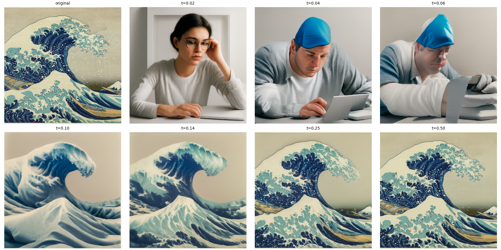
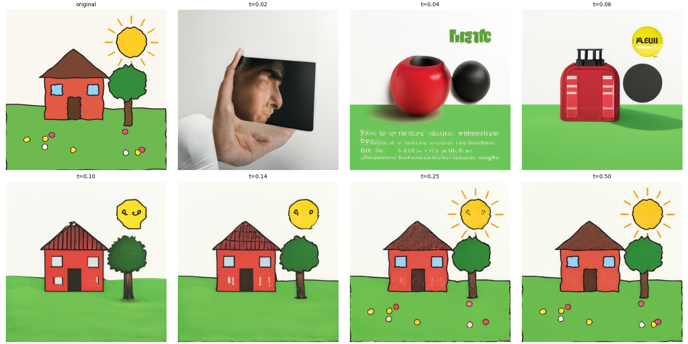
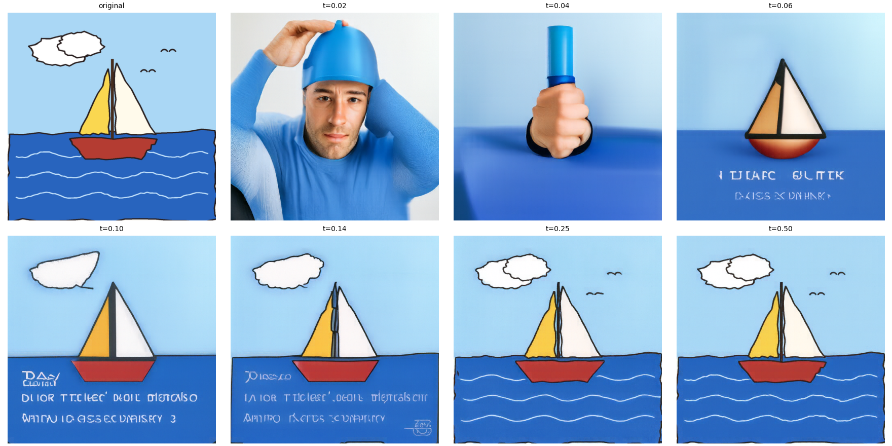
The Great Wave behaves like the photos: at 0.02 to 0.06 the model ignores the print and generates unrelated people at desks, but from 0.10 on the composition is kept and the wave turns into a smooth, almost photographic swell with a snowy Mount Fuji behind it, before the woodblock texture returns at 0.25. The drawings went differently from what I expected. Instead of being pulled toward photographs, they were pulled toward clip art and children's illustrations. At 0.04 to 0.06 the house drawing becomes a product shot with a red ball and a red bag on green grass, with fake text, and the sailboat becomes a flat icon above fake text. At 0.10 to 0.14 both are redrawn as cleaner illustrations, and the sun even grows a cartoon face. The generic prompt asks for "a high quality photo", but with flat colors and black outlines the closest images the model knows are graphics, not photos, so a small amount of noise is not enough to escape that style.
3.2 Text-guided image editing
Same procedure, but the generic prompt is replaced by one that describes the edit. Now the starting time sets a tug of war: at small times the prompt wins, at large times the input wins, and the interesting results are in between, where the layout of the input is kept but the content follows the prompt.

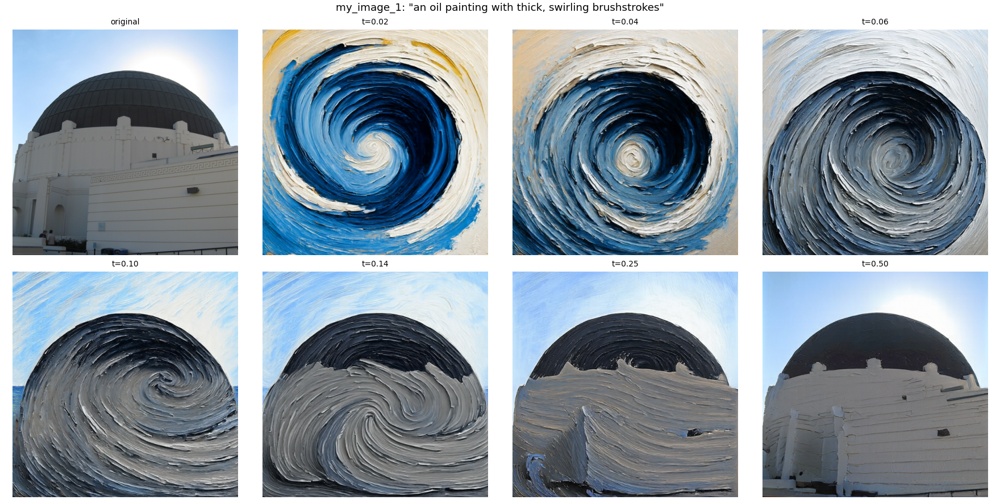
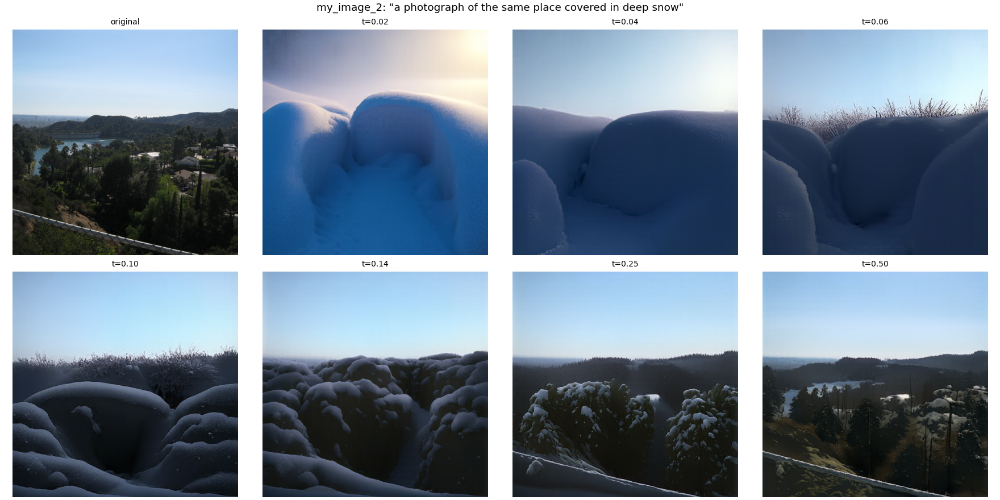
The lighthouse edit works across almost the whole range. At 0.02 to 0.06 it is a complete lighthouse on rocks by the sea, at 0.10 to 0.14 the tower keeps the Campanile's position, width and taper but has the lighthouse's white plaster, gallery and rocks, and only at 0.25 does the belfry come back, so 0.10 to 0.14 is the sweet spot. The oil-painting prompt turns the observatory into an abstract swirl of thick paint at low t; the dome's outline appears at 0.10, and at 0.25 it is a recognizable observatory painted in heavy horizontal strokes, which is the result I wanted. The snow prompt works best at 0.25 and 0.50: the view keeps its hills, trees and railing, with snow settled on the treetops and, at 0.50, on the hillside, while lower times produce generic snow drifts unrelated to the scene.
3.3 Visual anagrams
A visual anagram looks like one thing upright and another upside down. At every Euler step
I compute the guided velocity for prompt a on the image, and the guided velocity
for prompt b on the image rotated by 180°, rotate that second velocity back,
and average the two: v = (va(x) + R(vb(R(x))))/2. Each
step therefore moves the image toward something that satisfies both views at once. The
rotation flips both spatial axes, not just one, and since rotating twice is the identity, the
rotated view really is denoised by prompt b.
def visual_anagrams(noise, condition_a, condition_b, predict_velocity, w=7, step_size=0.02):
def v(x, t):
v1 = cfg_velocity(x, t, condition_a, w, predict_velocity, null_condition)
v2 = rotate180(cfg_velocity(rotate180(x), t, condition_b, w, predict_velocity, null_condition))
return (v1 + v2) / 2
return euler_sample(noise, 0.0, step_size, v)[0]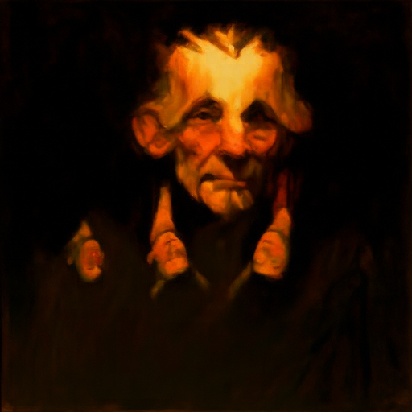
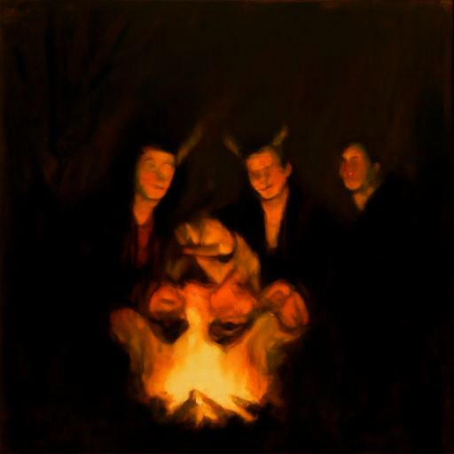
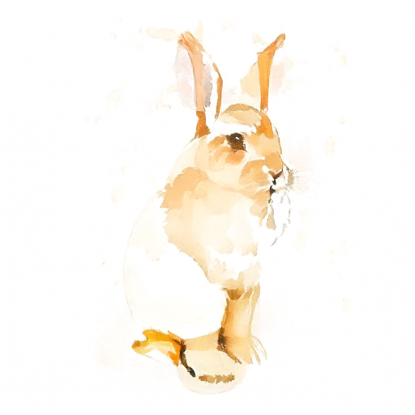
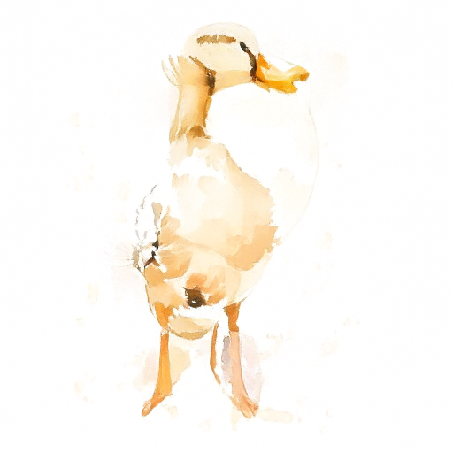
Not every seed works. Each illusion was sampled with three seeds and I kept the one where both views read most clearly. In the old man, the figures beside his shoulders become the people around the fire and his face becomes the flames; in the rabbit, the ears become the duck's legs and the rabbit's feet become the duck's head and beak.
3.4 Hybrid images
This is Project 2's hybrid image, built into the sampler (Factorized Diffusion). At every
step I take the low frequencies of the velocity for one prompt and the high frequencies of the
velocity for another: v = flow(va) + vb − flow(vb),
where flow is a Gaussian blur with kernel size 265 and σ = 16.
Up close the eye sees the high frequencies, so prompt b; from far away only the
low frequencies survive, so prompt a.
def make_hybrids(noise, condition_a, condition_b, predict_velocity, w=7, step_size=0.02):
def v(x, t):
v_a = cfg_velocity(x, t, condition_a, w, predict_velocity, null_condition)
v_b = cfg_velocity(x, t, condition_b, w, predict_velocity, null_condition)
return lowpass(v_a) + (v_b - lowpass(v_b))
return euler_sample(noise, 0.0, step_size, v)[0]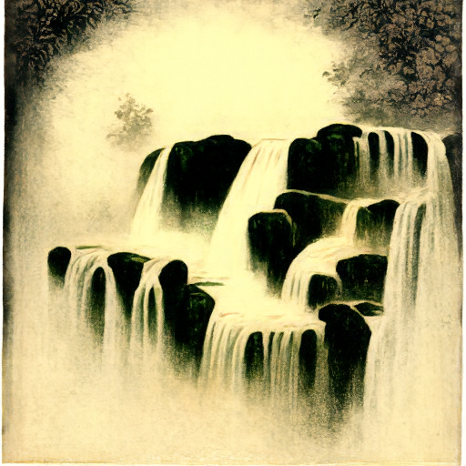
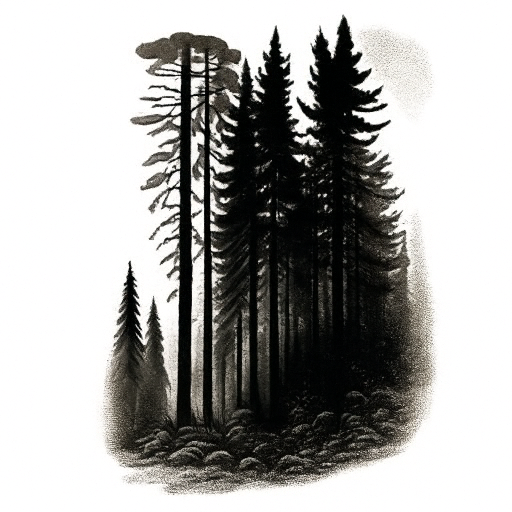
The small copies are the same images shrunk to 64×64, which is what stepping back does. Lithograph prompts work well because a lithograph is mostly fine line texture, which is exactly the high-frequency band, while the large dark and light regions underneath are free to form the second subject. In the waterfall, the two big dark rock clusters become the skull's eye sockets, the mist above is the cranium, and the row of thin falls at the bottom reads as teeth. The hybrids were also tried with three seeds each, and the distant, low-frequency subject was the harder one to get: the cat only shows up as a silhouette from behind.
Part B: Flow matching from scratch
All of Part B uses MNIST, pixels in [0, 1], training set only for training, and a fresh noise sample every time a batch is drawn from the data loader, so the network never sees the same noisy image twice.
1.1 Implementing the UNet
The UNet follows the assignment's diagram. Every simple op is a convolution, batch norm and
GELU: Conv keeps the resolution (3×3, stride 1), DownConv
halves it (3×3, stride 2), UpConv doubles it (4×4 transposed, stride 2).
Flatten average-pools the 7×7 bottleneck to 1×1 and
Unflatten blows it back up with a 7×7 transposed convolution. The composed
blocks add a ConvBlock (two Convs) after each resampling step.
D = num_hiddens
conv_in = ConvBlock(1, D) # 28x28, D
down1 = DownBlock(D, D) # 14x14, D
down2 = DownBlock(D, 2D) # 7x7, 2D
flatten = Flatten() # 1x1, 2D
unflatten= Unflatten(2D) # 7x7, 2D
up1 = UpBlock(4D, D) # cat(down2, unflatten) -> 14x14, D
up2 = UpBlock(2D, D) # cat(down1, up1) -> 28x28, D
conv_out = ConvBlock(2D, D) # cat(conv_in, up2) -> 28x28, D
out = Conv2d(D, 1, 3, 1, 1)The skip connections are what make this a UNet: the decoder gets the encoder's full-resolution features directly, so the bottleneck only has to carry global information such as which digit this is and how it is slanted.
1.2 Training a single-step denoiser
The training pairs are z = x + σε and the clean digit
x, with an L2 loss ‖Dθ(z) − x‖2.
Below is the noising process on five test digits.
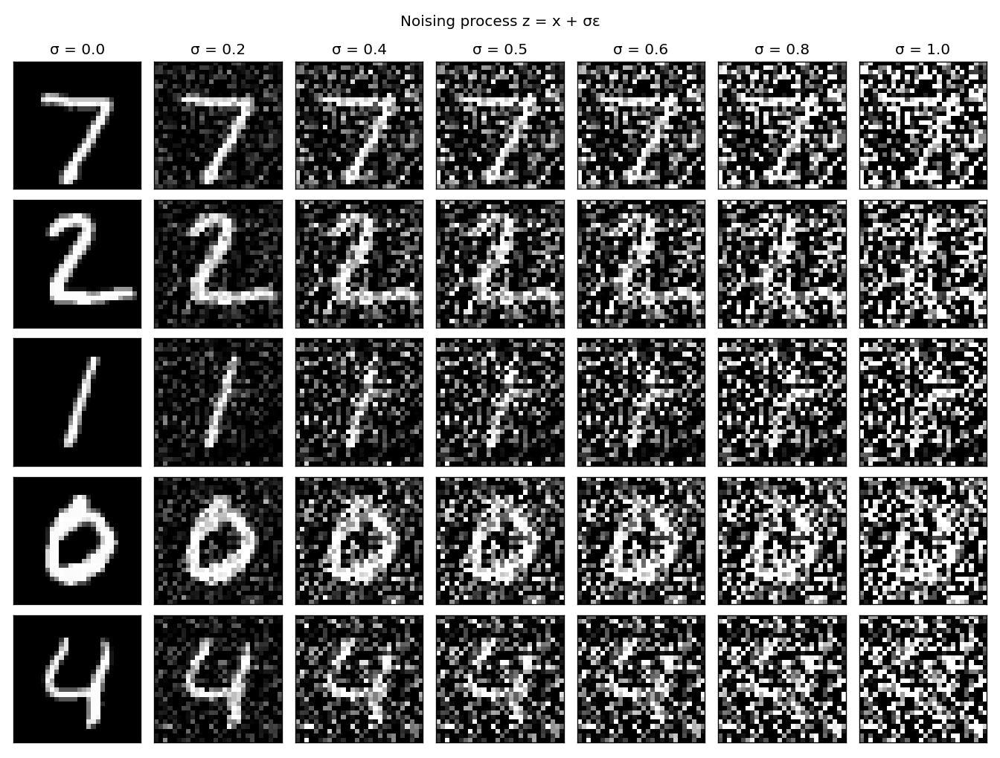
1.2.1 Training at σ = 0.5
D = 128, batch size 256, Adam with learning rate 10−4, 5 epochs.
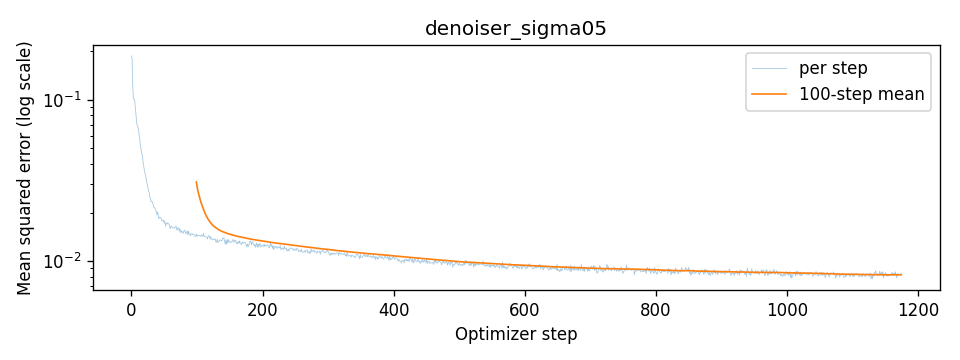
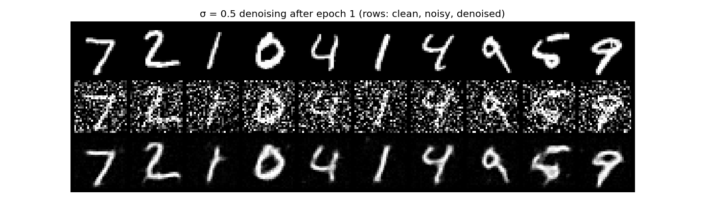
After one epoch the outputs are already recognizable digits, though some strokes are thin or broken and the 5 still has a gray smudge inside it. After five they are closer to the clean digits, with crisper strokes and a cleaner background. The final training loss is about 0.008.
1.2.2 Out-of-distribution testing
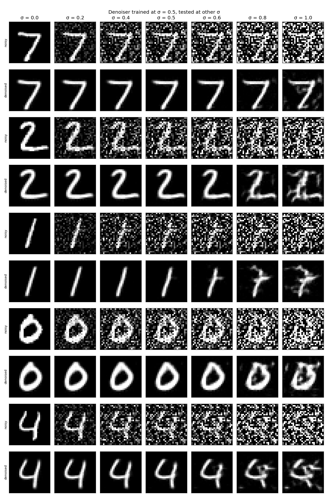
Below σ = 0.5 the denoiser does fine, since removing less noise than it was trained for is an easier version of the same job. Above 0.5 it degrades: it was only ever shown noise of one strength, so at σ = 0.8 and 1.0 noise it cannot explain leaks into the output as blotches around and inside the digit, and sometimes invents strokes: at σ = 0.8 my 1 picks up a crossbar and starts to look like a 7. The error to the clean digit grows quickly once σ passes 0.5, from 0.0075 at σ = 0.5 to 0.023 at 0.8 and 0.043 at 1.0. The network learned to denoise one noise level, not to denoise in general.
1.2.3 Denoising pure noise
Same network and training recipe, but the input is pure Gaussian noise z = ε
and the target is still a clean digit.
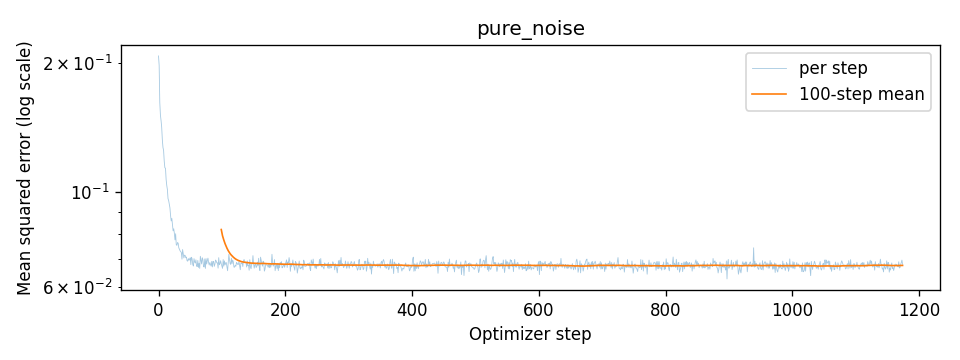
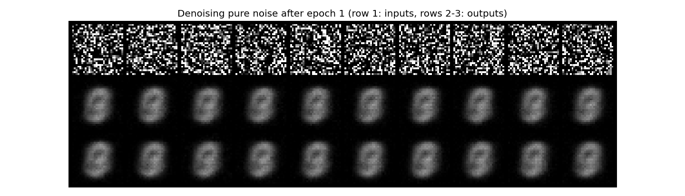
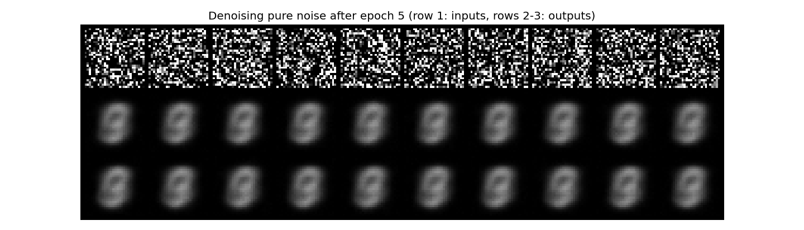
Every output looks the same: a blurry blob, bright in the middle where most digits have ink, a bit like several digits drawn on top of each other. It is not any particular digit, and the noise input makes almost no difference to it. The reason is the loss. The input is independent of the target, so it carries no information about which digit to produce, and the best a network can do under MSE is to output the value that minimizes the average squared distance to all training images, which is their mean, the centroid of the dataset. The outputs match the mean training image above almost exactly: their mean squared difference from it is 0.000125, and they vary across different noise inputs by only 0.006 per pixel on average. Producing an actual digit would need the network to commit to one, and MSE punishes every wrong commitment more than it rewards a right one. That is why one-step denoising cannot generate, and why the rest of Part B goes in small steps.
2.1–2.3 Time-conditioned flow matching
Flow matching trains the UNet to predict the velocity u = x1 − x0
at the point xt = (1 − t)x0 + t x1, for
random t ~ U[0, 1]. The network has to know t, so I inject it with
two small fully connected blocks (Linear → GELU → Linear). The first
produces a 2D-channel vector that multiplies the unflattened bottleneck; the second produces a
D-channel vector that multiplies the output of the first UpBlock. t is already in
[0, 1], so it needs no further normalization.
def time_fm_forward(unet, x_1, num_ts):
x_0 = torch.randn_like(x_1)
t = torch.rand(x_1.shape[0], device=x_1.device)
tb = t.view(-1, 1, 1, 1)
x_t = (1 - tb) * x_0 + tb * x_1
return F.mse_loss(unet(x_t, t), x_1 - x_0)
@torch.inference_mode()
def time_fm_sample(unet, img_wh, num_ts, seed=0, num_samples=40):
x = torch.randn((num_samples, 1, *img_wh), generator=torch.Generator().manual_seed(seed)).to(dev)
dt = 1.0 / num_ts
for i in range(num_ts):
x = x + dt * unet(x, torch.full((num_samples,), i * dt, device=dev))
return xD = 64, batch size 64, Adam with initial learning rate 10−2 and an exponential decay of 0.11/10 per epoch over 10 epochs (so it ends at 10−3). Samples use 50 Euler steps.
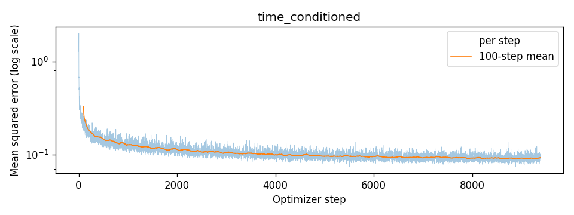
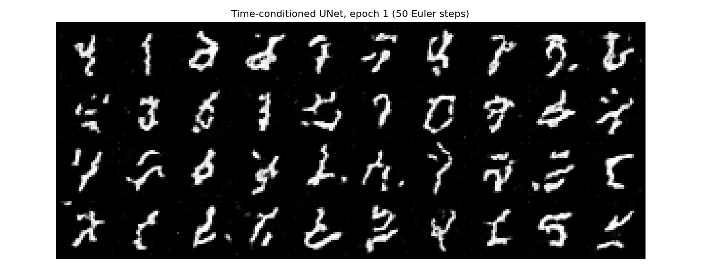
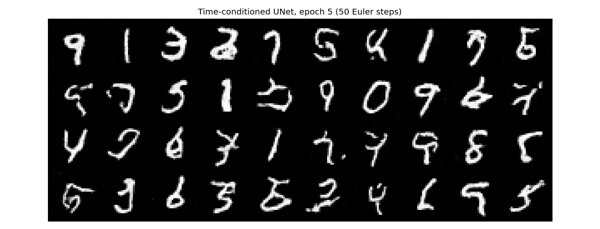
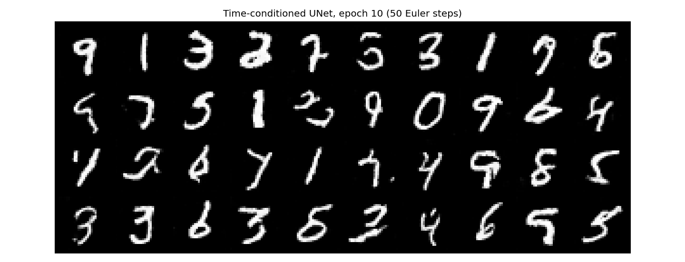
The flow-matching loss does not go to zero, and it should not: x1 − x0
depends on the exact noise and digit, which the network cannot know from a noisy mix, so the
best it can learn is their average. That average is exactly the velocity field we want to
follow. The samples improve from epoch 1 to 10, from scattered strokes to mostly digit-like
shapes, but many are still malformed, since the model must decide on its own which digit to
draw. In my epoch 1 grid almost nothing is a digit, just tangled strokes. By epoch 10
most samples are clean, readable digits such as the 1s, 3s, 0 and 8, but roughly a quarter are
still malformed hybrids, like a 2 that trails off into a loop or a 4 that is missing a stroke. The
model draws good strokes but sometimes cannot settle on which digit it is drawing.
2.4–2.6 Class-conditioned flow matching
Two more fully connected blocks take a one-hot class vector c, and the
modulation becomes c1·unflatten + t1 and
c2·up1 + t2. During training the class vector is
replaced by zeros 10% of the time, so the same network also learns the unconditional
velocity. Sampling then uses classifier-free guidance with γ = 5 and 300 Euler steps:
u = uuncond + γ(ucond − uuncond). (Part B
writes guidance from the unconditional side; with γ = 1 it is plain conditional
sampling, so γ here equals Part A's w + 1.)
def class_fm_forward(unet, x_1, c, p_uncond, num_ts):
n = x_1.shape[0]
mask = (torch.rand(n, device=x_1.device) >= p_uncond).to(x_1.dtype) # 0 with prob. p_uncond
x_0 = torch.randn_like(x_1)
t = torch.rand(n, device=x_1.device)
tb = t.view(-1, 1, 1, 1)
x_t = (1 - tb) * x_0 + tb * x_1
return F.mse_loss(unet(x_t, c, t, mask), x_1 - x_0)
# sampling loop (inside class_fm_sample)
for i in range(num_ts):
t = torch.full((n,), i * dt, device=dev)
u_uncond = unet(x, c, t, torch.zeros(n, device=dev))
u_cond = unet(x, c, t, torch.ones(n, device=dev))
x = x + dt * (u_uncond + guidance_scale * (u_cond - u_uncond))Same training settings as the time-only model: D = 64, batch size 64, initial learning rate 10−2 with exponential decay, 10 epochs.
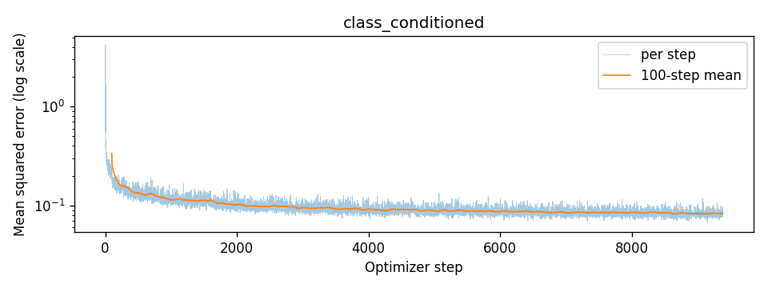
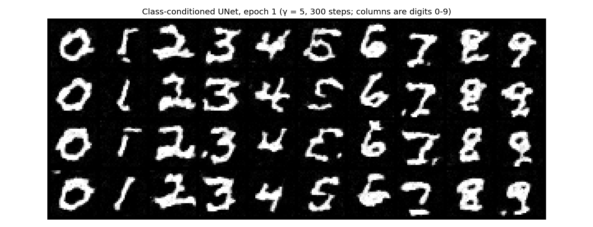
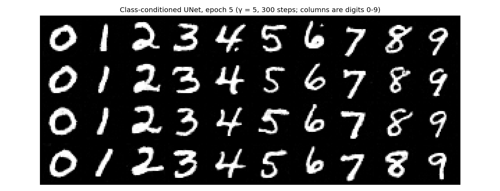
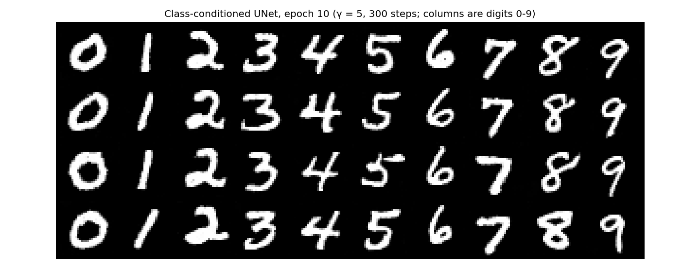
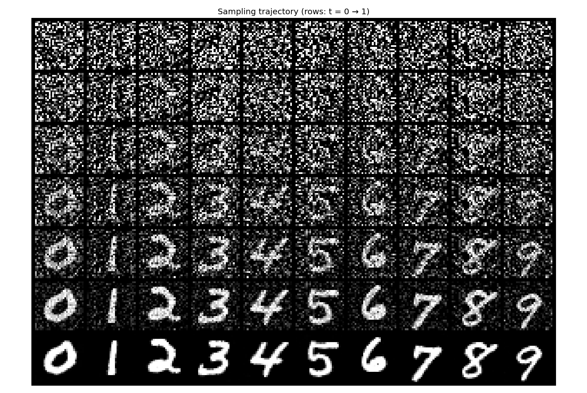
Knowing the class, the network no longer has to choose between ten digits, and guidance sharpens that choice further, so the samples are far cleaner than the time-only ones. Even after one epoch every column is the right digit, just with blobby, uneven strokes; by epoch 10 all 40 samples are clean, correct digits with natural variation in slant and thickness between the four copies. The trajectory shows the coarse shape of the digit appearing early and the strokes sharpening near the end.
Removing the learning rate scheduler
The scheduler starts at 10−2, which makes fast progress early, and decays to 10−3, which lets the weights settle at the end. Simply holding 10−2 constant keeps the late updates too large and noisy. To compensate, I train with a constant learning rate of 10−3, the value the scheduler ends at, and clip the gradient norm at 1.0 so that the large, unstable gradients at the start of training cannot throw the weights around. Everything else (10 epochs, batch 64, seed) is the same.
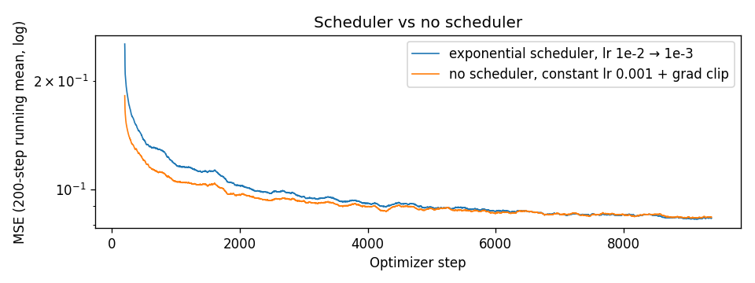
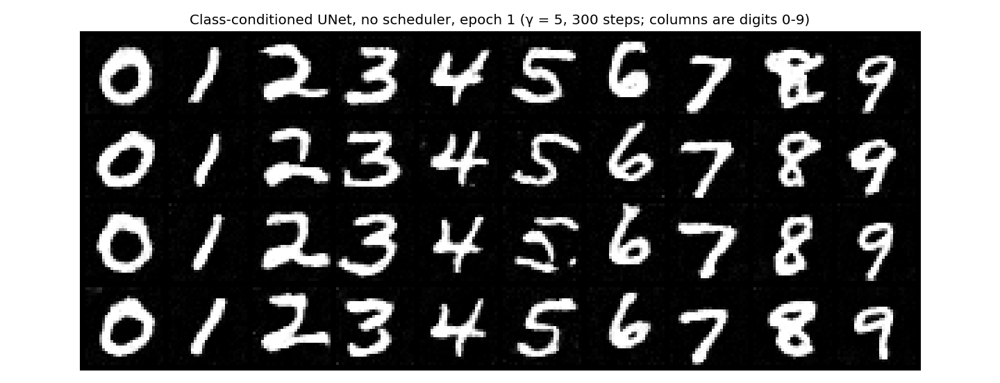
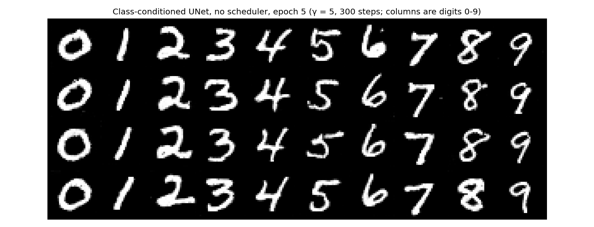
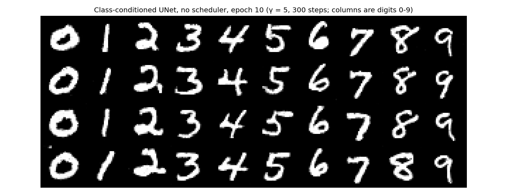
Removing the scheduler costs nothing here. The final 100-step mean loss is 0.0833 with the scheduler and 0.0836 without, a difference far smaller than the step-to-step noise, and the epoch 10 grids are equally clean: every column is the right digit in both. The loss curves show the trade-off differently than I expected. The constant 10−3 run is actually ahead for the first few thousand steps, because the scheduler's early rate of 10−2 is too high to make steady progress, and the two curves meet after about 7,000 steps. So the scheduler's real job here was the small learning rate at the end, and a constant small rate with clipping gives that from the start.
What I learned
The idea that tied this project together for me is that a velocity prediction is an average. Averaged in one jump, as in one-step denoising and the pure-noise experiment, it gives a blurry centroid. Followed in small steps, it gives a sharp sample, because each step only has to be right locally. Once the sampler is just "follow this vector field", the creative tricks are all about editing the vector field: scale the part a prompt adds (guidance), average two fields seen through a rotation (anagrams), or take different frequency bands from two fields (hybrids), which turned out to be the same frequency split as Project 2.
Image sources. The Campanile image is from the course. The web image is Hokusai's The Great Wave (public domain), taken from the example images of the fast-style-transfer repository on GitHub. The two photos (the observatory and the reservoir view) are my own. Model: PixNerd-XXL-P16-T2I (MCG-NJU) with the Qwen3-1.7B text encoder, through the course's notebook.